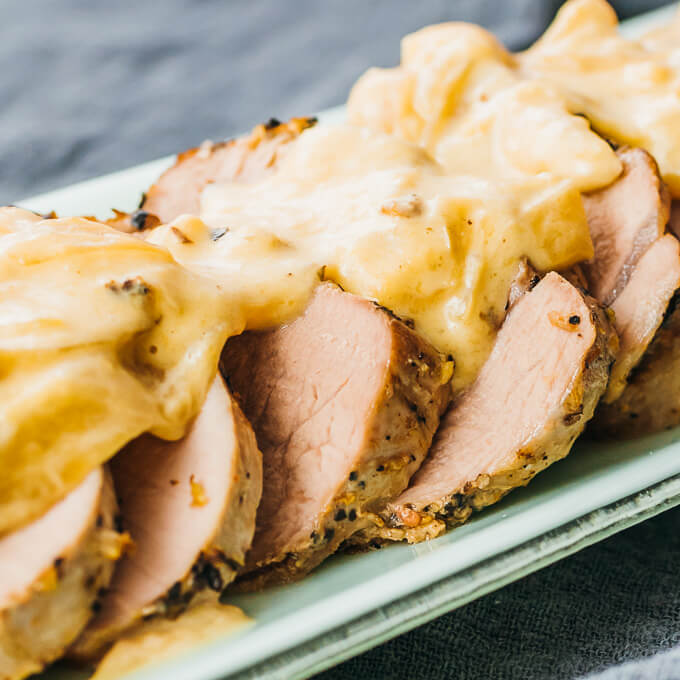

Pork Tenderloin

Description
Tender and juicy, this pork tenderloin is enjoyed with onions and a creamy mustard sauce. With the Instant Pot, just a single pot is used for browning the meat, pressure cooking, and simmering the sauce.
Ingredients
Pork:
- 1 pork tenderloin
- 1 small onion, thinly sliced
- 1/2 cup water
- 1 tablespoon olive oil
- salt and pepper
Sauce:
- 1/2 cup heavy whipping cream
- 1/4 cup finely grated parmesan cheese
- 1 tablespoon dijon mustard
Directions
- Prepare Pork: Cut pork tenderloin in half, so it is half as long as before. If unseasoned, season all sides with salt and pepper.
- Brown Pork: Turn on saute mode on pressure cooker for medium heat. When display reads HOT, add olive oil to coat bottom of pot. Add pork and cook until golden brown on one side, about 5 minutes. Flip and cook other side for a few minutes. Transfer pork to plate.
- Cook Onions: Add onions to pressure cooker pot and cook for a few minutes, stirring frequently. Turn off saute mode. Add water, stirring and briefly loosening any brown bits stuck to bottom of pot. Return pork to pot, nestling it on top of onions.
- Pressure Cook: Secure and seal lid. Cook at high pressure for 4 minutes, followed by 10 minute natural release. Uncover, and insert thermometer into thickest part of tenderloin — it should read 140 to 145 F. Transfer pork to cutting board and let rest, where it will continue cooking. Do not slice yet
- Make Sauce: Turn on saute mode. With remaining liquid in pot, add heavy cream and mustard, stirring together. Bring to boil. Let sauce boil for 8 to 10 minutes to thicken, stirring frequently. Turn off saute mode and stir for a minute until boiling subsides. Stir in parmesan cheese until melted.
- Serve: Slice pork into thin slices and transfer onto serving plates. Pour sauce on top and serve.